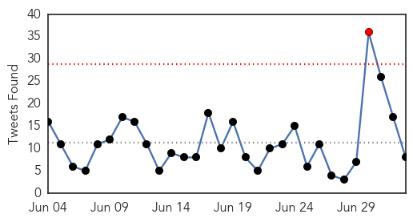

Swine Flu
30-Day Web Trend
1 alerts, 0 warnings

30-Day Twitter Trend
0 alerts, 0 warnings

Article Locations
Article Confidences

Top Articles:
Top Tweets:
-
No tweets found for Jul 03, 2015
Ebola
30-Day Web Trend
0 alerts, 0 warnings
30-Day Twitter Trend
1 alerts, 0 warnings

Article Locations

Article Confidences

Top Articles:
- 1.000
- Recurrence of Ebola transmission in Liberia
- 1.000
- Love in the time of Ebola: How sex is keeping the outbreak alive
- 1.000
- Man tested for Ebola in Liverpool hospital after returning from work visit to West Africa
- 1.000
- Liberia investigating animal link after Ebola re-emerges
- 1.000
- Llandudno ebola scare: how to spot the signs
- 1.000
- Liberia confirms third Ebola case in new outbreak
- 1.000
- As New Ebola Cases Emerge in Liberia, Officials Race to Halt Outbreak
- 1.000
- The Nation Nigeria
- 1.000
- Ebola Returns to Liberia: Where Did It Come From, and Could It Spread?
- 1.000
- 2nd Ebola case declared in Liberia as health workers protest
- 0.999
- Nigeria ‘raises alert level’ after Ebola resurgence in Liberia
- 0.999
- Ebola scare in North Wales as man rushed to hospital to be tested for the deadly virus
- 0.999
- 2nd Ebola case declared in Liberia as health workers protest
- 0.999
- Ebola: Re-emergence of disease in Liberia may be linked to animals
- 0.999
- Liberia announces two more confirmed Ebola cases
- 0.998
- New Ebola containment effort under way in Liberia
- 0.998
- Ebola returns to Liberia, claims new life and sparks fear of new outbreak
- 0.998
- Lagos urges ‘highest possible hygiene standards’ to prevent Ebola resurgence
- 0.998
- Liberia Devices Robust Measures To Control Ebola Resurgence
- 0.997
- Congo and WHO investigate possible Ebola outbreak
- 0.997
- Liberia: Third new case marks a resurgence in Ebola
- 0.997
- Liberian leader says new Ebola outbreak can be contained
- 0.997
- Madison County’s medical community ready for Ebola
- 0.997
- How Ebola returned to Liberia (possibly via dog meat), while Sierra Leone's rich are bribing to break the rules
- 0.992
- Man taken ill in Llandudno being tested for deadly ebola virus
- 0.992
- After Liberia Declared 'Ebola-free,' New Cases Reported
- 0.992
- Congo and WHO investigate possible Ebola outbreak
- 0.986
- Liberian, Sierra Leonean Ebola survivors demand accountability for relief funds
- 0.976
- Ebola: Lagos State Puts Residents On Alert
- 0.974
- No trace of new Ebola transmission
- 0.972
- Ebola: Patient being tested for deadly virus at Royal Liverpool Hospital
- 0.971
- New cases of Ebola pop up in Liberia
- 0.963
- UNICEF teams, supplies arrive in areas affected by new Ebola cases in Liberia - Liberia
- 0.959
- Ebola: Lagos Alerts Residents, Calls For Precautionary Measures
- 0.958
- Health Minister wants surveillance strengthened
- 0.955
- Ebola: Lagos calls for precautionary measures
- 0.954
- N. Korea ramping up efforts to prevent MERS outbreak
- 0.933
- Ebola still stands at 2
- 0.929
- Kandeh Yumkella speaks in Abidjan about post-Ebola recovery
- 0.904
- News in Brief 02 July 2015 (PM)
- 0.898
- The most from the coast
- 0.849
- Rebuilding Liberia Health Care
- 0.838
- West Africa Journalists examine region's health system
- 0.837
- Ellen warns protesting health workers
- 0.829
- CHASL donates 12 ambulances to hospitals « Awoko Newspaper
- 0.815
- Nebraska medical center to get funding for Ebola training
- 0.781
- ‘We Want Mothers to Live’
- 0.617
- Ebola Survivors battling side effects in Margibi
- 0.578
- Six (6) Man Chinese Technical Team depart for Freetown ahead of arrival of 100 buses July 8
- 0.546
- Tests rule out MERS in Czech tour guide
Showing top 50 articles...
Top Tweets:
- 0.968
- Ebola Has Resurfaced In Liberia With Three New Cases - io9 http://t.co/aFcrYVXT3x ebola EVD
- 0.958
- Liberia Reports New Cases of Ebola - New York Times http://t.co/EZXOWY3p7h ebola EVD
- 0.902
- 10000 people in US monitored during Ebola scare - CBS News http://t.co/4h9cU9rizC ebola EVD
- 0.897
- Ebola alert at Royal Liverpool Hospital as man who travelled to west Africa is ... - Liverpool Echo http://t.co/207C1bNBr4 ebola EVD
- 0.873
- Madison County's medical community ready for Ebola - Alton Telegraph http://t.co/1iosCr8swo ebola EVD
- 0.854
- On Ebola Flap, Both Sides Are Wrong - GhanaWeb http://t.co/JVodIuozH4 ebola EVD
- 0.835
- Ebola Update: 27,514 confirmed, probable and suspected cases reported in 3 most affected countries, with 11,220 deaths. EbolaResponse
- 0.826
- Real-timeanalysis of Ebola virus evolution http://t.co/rj9T7z929w
- 0.768
- WHO Situation Assessment: Recurrence of Ebola transmission in Liberia http://t.co/UWUv6Lzwow
- 0.761
- Ebola returns as new fears centre on dog meat - The Times (subscription) http://t.co/y2zAtTYZew ebola EVD
- 0.731
- Man tested for Ebola in Liverpool hospital after returning from work visit to ... - Mir http://t.co/U5SlTJ4NuA ebola EVD
- 0.701
- Ebola nurse to be awarded OBE for her work with the deadly disease - http://t.co/L4gbwrglxU http://t.co/Z8T4fQvX3A ebola EVD
- 0.701
- Ebola Has Resurfaced In Liberia With Three New Cases - io9 http://t.co/2mvVPlC7s9
- 0.693
- As Ebola fears return, Congo-Brazzaville steps up fight against illegal bushmeat - The Guardian http://t.co/DzF95yJC34 ebola EVD
- 0.684
- Liberia Reports New Cases of Ebola - New York Times http://t.co/7BpXEWgbcW
- 0.683
- RT: Liberia Health Officials Suspect Shared Dog Meat Meal Played A Part In Ebola Resurgence http://t.co/Wq2lLbLdj7
- 0.677
- RT: NEWS SCAN: MERS in South Korea, Saudi MERS cases, H5N1 in Egypt, US Ebola monitoring http://t.co/JVA5fMwt6z
- 0.677
- RT: Latest on the Ebola outbreak, including updated figures, maps and graphs: http://t.co/taS13P5hMB
- 0.634
- Liberia ebola cases highlight importance of early detection & enhanced vigilance. Read assessment: http://t.co/1h5gSekKDn
- 0.628
- Découvrez les 14 candidats sélectionnés du concours Africa Stop Ebola sur le site :... http://t.co/kekmZu3brQ
- 0.606
- Understanding how communities interact with the Ebola intervention in Sierra Leone: a qualitative study http://t.co/IGKuIgOOc9
- 0.600
- UNICEF teams, supplies arrive in areas affected by new Ebola cases in Liberia http://t.co/Unl11qFlwW via
- 0.581
- RT: LiberiaWorks to Contain Ebola, Find Source of New Cases http://t.co/TtzrlxwY6F
- 0.505
- RT: Scapegoated faith healers needed in Sierra Leone health system - @ODIdev http://t.co/eJTykqemjP Ebola http://t.co/4iPabfhS32